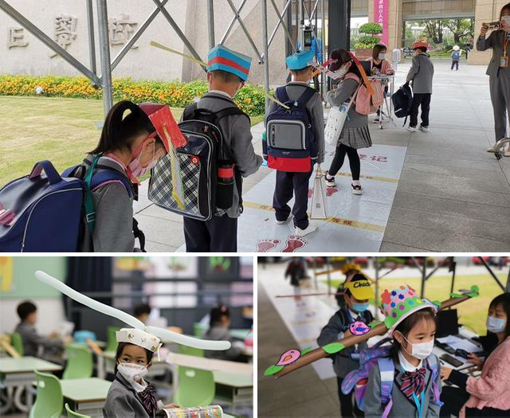
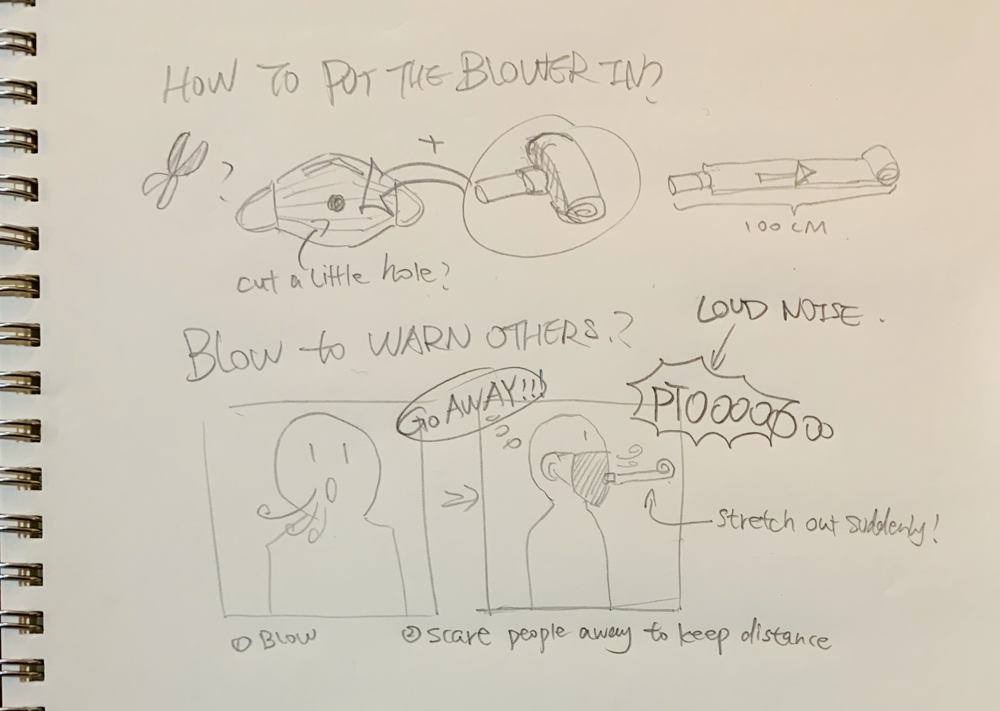
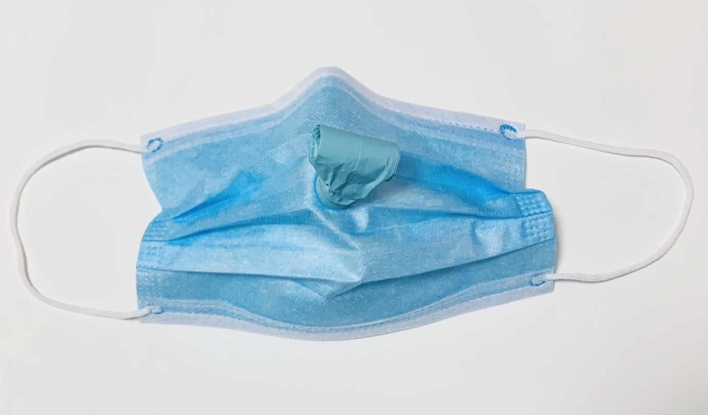

How to keep one meter distance with each other during the epidemic, but in a funnier way?
Distance Keeper is a mask with a party blower inside. When wearing this product, you can effectively keep your distance with others, protect yourself from COVID-19 and politely chase away anyone dare to walk within the one meter safety circle of yours.
This is a design for kingdergarten kids, this kind of cute little hat helps children keep distance with each other, it's called "a meter hat(一米帽)".
I really appreciate the sence of humor of this design, so I designed my own distance guarding tool.

Design process of this mask is pretty simple. The moment I got this idea, I knew it would be hilarious...

